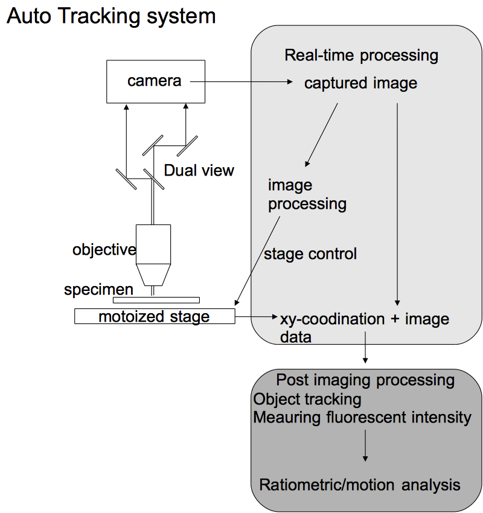
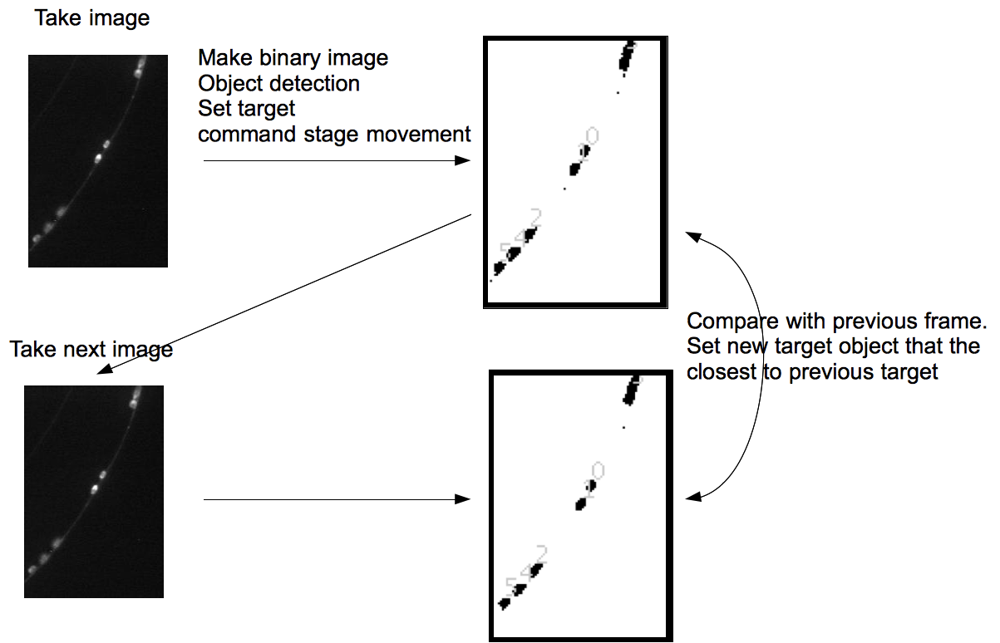
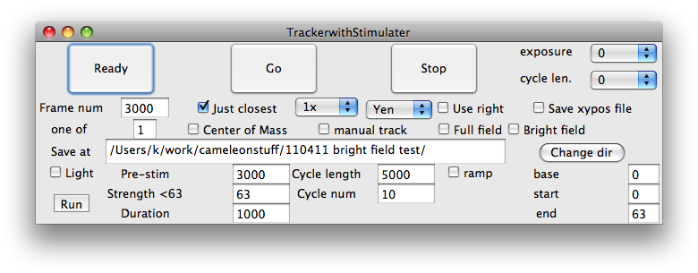
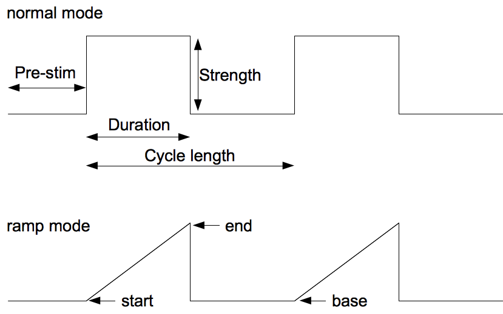

This document tells you how to use Tracker and stimulater (TrackStim) micromanager plugin to image moving C. elegans. It is mainly focusing on fluorescent image but it also could utilize to take bright field image. See other document about cooperation with a device for optical stimulation.
Tracker and stimulater is a micromanager plugin that control ASI MS-4000 motorized stage using images taken by Hamamatsu Orca R2 CCD camera attached with Photometrics Dualview beam splitter .
It is written for micromanager 1.3. and may not work on newer version. Also many parameters are hard coded for the Camera, motorized stage and directory structure. So, this plugin NEVER work without changing code and compile under the other environment than original one. This software is provided "as is" and there is no warranty of any kind and no support at all.
Copyright © 2013 Taizo Kawano
Schematics of system and work flow

The TrackStim plugin manages Real-time processing part in the above figure. It processes images captured by the CCD camera to detect bright object and control the motorized stage to track the object. The coordinate of the stage is stored in header of tiff image file. After the imaging, other programs, such as DVtracer, has to be employed for further analysis (Post processing part).

First, adequate threshold is calculated by the assigned method and applied to the image. Next, the binary (black and white) image is subjected to object detection. An object that is the closest to the center of the field of view is set as target object. In the next frame, same threasholding and object detection process are curried out. But, this time, the distances between each object in current frame and objects previous frame are calculated and a closet object of the target in the previous frame is considered as targed object in the current frame. Then, if the target is separated from the centor of view, the program command motorized stage to re-centor the target.
As you can imagine, if there are multiple bright object and the motion is too fast, the program mistakenly track inadequate object. In the case that the fluorescence signals are not distributed wider than field of view (eg. a few cells in head) enabling "Centor of mass" option may help to achieve stable tracking (see Detailed explanation of interface).
To install it, put TrackStim_.jar file to appropriate directory. It might be somewhere under micromanager/plugin/ folder. Restart micromanager. This plugin requirs 4x binning 16-bit images taken by hamamatsu orca R2. Set up micromanager preset. (see micromanager to know how to set up micromanager)
Turn on stage controller, camera controller and microscope.
Open micromanager.
In micromanager main window, choose a preset. (128gain; 4x binning, 128 digital gain, 100 msec exposure)
Set exposure time if you need other than 100 msec.
Click image button and open a preview window.
Start TrackStim plugin from plugin menu of imageJ, not micromanager plugin menu. You will see the plugin window as below.

Setup the frame number etc. For bright field imaging, check Full field and Bright field check boxes.
Look for specimen and locate target object at the center of view, and click Ready to see if the plugin can track what you want.
Click Go button and wait until finish imaging.
Onece imaging has done, there are images in the folder named "untitled#". Use other programs to analyze the images. You may use DVtracer for calcium imaging analysis or BFtracker for bright filed image analysis. See other document about these programs.
Ready; Start tracking object without saving images.
Go; Start tracking and imaging.
Stop; Stop tracking and imaging.
exposure; If SyncDAC connected, exposure time of the camera could be set by this pull down menu. 0, 10, 50, 100, 200, 500, 1000 msec.
cycle len.; Again, if SyncDAC connected, set cycle length of imaging. This must longer than twice of exposure time. eg. if exposure is set as 50 msec, cycle length must longer than 100 msec.
Frame num; Number of images taken by camera. "one of" option determine how many of them are saved.
Just closest; not implemented.
1x etc.; Stage accelerating modulus.
Yen; The thresholding method to make binary image and detect object.
Use right; not implemented.
Save xypos file; Save stage position data as sepalated file. Normally the data is saved in the header of tiff file.
one of...; Determine how many images discard. eg. one of 1 means save all images. one of 2 means half of images are saved and rest are throw away. So, If you set 50 msec exposure at micromanager main pannel (20 frame/sec), half of images are saved and resultant data is 10 frame/sec.
Center of Mass; Change tracking method. When unchecked it, the plugin track a bright object close to the center of field of view. If checked it, center of mass of whole left half of view is calculated and track it.
manual track; Disable tracking features. You have to track object by joystick. The stage position data is still available.
Full filed; Use whole field of view instead of left half. only work when used with bright field option?
Bright field; Using inverted image to detect object. So you can track dark object, not bright one. When you want to track an animal in bright field, enable this and the "Full field" option, and change the Dual-view set up so that the camera take images not split into to wave length.
Save at; Assign directly for saved images here. The plugin makes a directly named "Untitled#" in it every session and save images with serial number.
Change dir; This button pop up directly selection dialog to set saving directory above.
Following options are only used for SyncDAC, so if you just take images without optical stimulation, ignore them.
See other document for more detail.
Light; You need check this if you using SyncDAC to apply optical stimulation.
Run; You can apply light without taking images, by clicking this button.
Pre-stim; Length or the period before the initial signal.
Strength; Light strength. maximum 63.
Duration; Length of light signal.
Cycle length; Length of one cycle.
Cycle num; How many times repeat.
ramp; You can change the strength of light as liner ramp.
base; Strength applied interval.
start; Strength at the beginning of the duration.
end; Strenght at the end of duration.

2010 initial release
20130118 updated according to TrackStim_03.